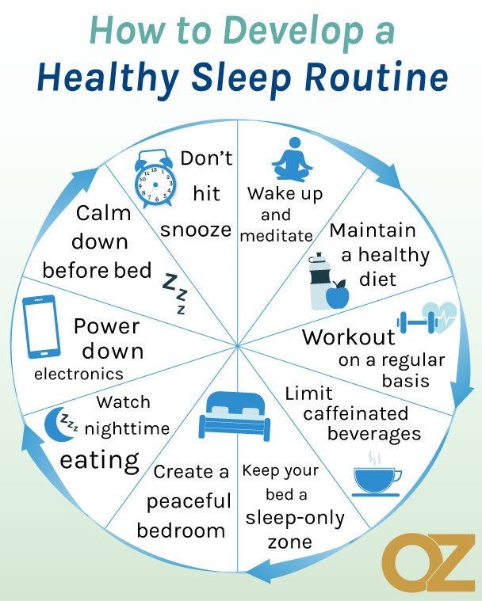

The impact of blue light on the physical body can be observed in sleep quality. The average length of sleep for an adult is 7–9 hours, although 10 hours is sometimes recommended. At night, the brain goes through different phases of what's called the circadian rhythm. Imagine the circadian rhythm of someone who has been drinking compared to someone who is sleep-deprived — the effects are similar. The body's motor skills become less sharp. These patterns of habit can make or break your sleep routine. Your circadian rhythm will not remain consistent if disrupted.
Are Smartphones Still Usable?
The internet is made accessible by browsers like Google Chrome, Mozilla Firefox, and Microsoft Edge. They are relevant to this discussion because modern technology relies on browsers for tasks like building websites, finding jobs, locating shelter, and accessing resources. Smartphones also come with built-in tools to help reduce blue light exposure.
Healthy Sleep
